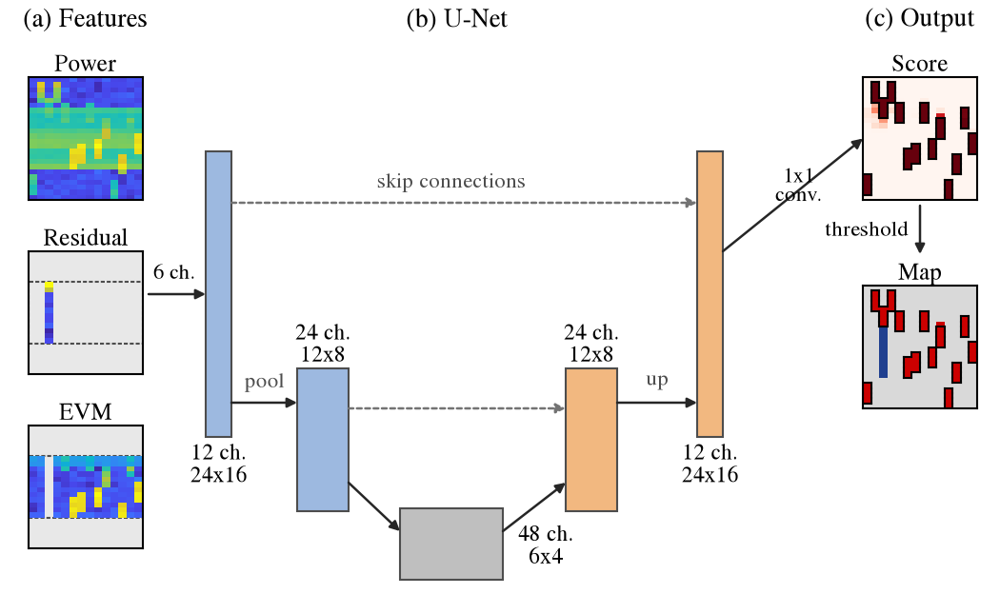
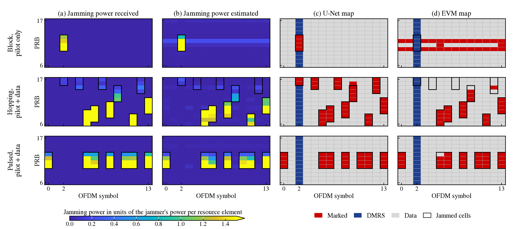
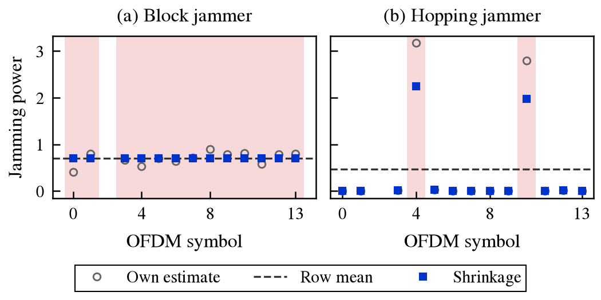

Generated by python -m jamloc.experiments.figures; PDFs for the paper are next to each PNG.
Explanatory figures
system_diagram: The standard receiver passes the received grid through DMRS channel estimation, LMMSE equalization, demapping and LDPC decoding. The detector computes power from the grid, the DMRS residual from raw LS pilot estimates, and EVM from the equalized symbols and their noise variance. A U-Net and threshold produce a 24 by 14 jamming map. The dashed paths show how the receiver uses the map to set pilot and data variances on a second pass through the same slot.

unet_process: The U-Net on one slot of the hopping jammer on pilots and data (+6 dB JSR, 15 dB SNR, TDL-C, the UE on PRBs 6-17 dashed). (a) The received power, the pilot residual and the EVM of every cell of the carrier, in dB on their own colour scales. (b) The network, with blocks drawn to the size of their grid and channel count. (c) The score of every cell and the map after the threshold, with the jammed cells outlined. The map marks 56 of the 56 jammed cells, misses 0 and marks 1 clean cells.jamming_estimates:

attack_maps: One slot under three attacks at +6 dB JSR and 15 dB SNR (TDL-C, the UE on PRBs 6-17), with the jammed cells outlined. Columns (a) and (b) show the jamming power that reached each cell and the power the receiver assigns without a map, from shrinkage on the data cells and from the pilot residual on the DMRS cells, in units of the jammer's power per resource element. The U-Net misses 0, 0, 0 jammed cells and the EVM threshold marks 28, 0, 0 cells the jammer never touched, row by row.

shrinkage_example: Jamming power of the data cells of one PRB in one slot, (a) under a block jammer that hits every data symbol and (b) under a hopping jammer that hits 2 of them (+9 dB JSR, TDL-C, 15 dB SNR). The bars show the power that reached each cell, the circles each cell's own estimate, the dashed line the PRB average and the squares the shrinkage estimate, all in units of the jammer's power per resource element, with jammed symbols shaded and the DMRS symbol 2 left out.after_decoding: system_views: data_aided_passes: attack_patterns: residual_explained: constellations: feature_distributions: detector_outputs: training_curves: constellations_with_map:
Results
BER/BLER sweep, TDL-A: BLER of the unprotected link when the jammer covers the whole allocation, against JSR per jammed resource element (left) and against the jammer's total energy in the slot (right). Shaded bands are 95% confidence intervals; a hollow triangle marks a point without any block error, drawn at its 95% upper bound. Per unit of energy, pilot jamming is the most damaging attack.BER/BLER sweep, TDL-C: The same for TDL-C.
Feature maps of one slot per attack: Not produced yet - run python -m jamloc.experiments.feature_maps
Detection, test set: Probability of detecting a jammed cell inside the allocation at 1% per-cell false alarm, against JSR, mean and +-1 standard deviation over training seeds.Detection, all jammed cells: The same, including jammed cells outside the allocation (easier: no UE signal there).Detection, scheduling-aware jammer: The jammer hits exactly the scheduled PRBs, an attacker no detector saw in training.Detection at SNR 5-15 dB: Test slots with low SNR only.Detection at SNR 15-25 dB: Test slots with high SNR only.Map-aware recovery, TDL-A: BLER of five receivers decoding the same slots: no protection; DMRS-only interference estimation without a map (what a receiver can do today: it cannot see data jamming); the classic power-test map with dropped pilots and erased data (Li et al.); the fused U-Net's map used softly (the map says where, the receiver estimates how strong); and the true map used the same way. Green background: JSRs where the soft P+R+E receiver beats no protection. Bands: 95% confidence; hollow triangles: no block error (95% upper bound). The title gives the BLER without any jammer.Recovery ablation, TDL-A: Hard against soft use of the map: dropping flagged pilots and erasing flagged data costs BLER at weak jamming, where false alarms hit clean cells; weighting them by the estimated jamming power does not. Also the map of the U-Net without the residual (P+E), and the true map used both ways.
Map-aware recovery, TDL-C: Not produced yet - run python -m jamloc.experiments.recovery --channel C
Recovery ablation, TDL-C: Not produced yet - run python -m jamloc.experiments.recovery --channel C
The DMRS residual against its theory: (a) Without jamming, the residual of a PRB is a weighted sum of exponentials that depends on neither the channel nor the SNR, so its 1% threshold is computed from the allocation alone: the measured false-alarm rate stays at 1% from 5 to 25 dB on both channels, with no training data. With delays beyond tau_max (unseen 1000 ns channel) the assumption breaks and so does the rate. (b) Probability of exceeding the threshold for pilot jamming of 4 of 12 PRBs. The lines show the theory. Filled markers show TDL-A and open markers show TDL-C link simulations. A neighbouring PRB can exceed the threshold when jamming energy leaks through the projection. (c), when shown, gives detection for a jammed PRB after averaging the residual over K slots. The lines show the theory and the markers show pilot-level Monte Carlo results, all at 1% false alarm.Conditions never seen in training: Detectors trained on 100/300 ns channels at up to 3 m/s with a Gaussian jammer, thresholds unchanged. A QPSK jammer changes nothing. Long delays and high speed raise the false alarms of everything that uses receiver features (residual, EVM), because the channel no longer fits the delay subspace or changes within the slot; the power feature alone is robust.Mixed training against unseen conditions: The same U-Nets retrained on batches cycling through nominal channels, long delay spreads and speeds up to 30 m/s, against the nominally trained ones.How small can the U-Net be?: F1 and Pd of the fused detector against the number of parameters (width of the first level 4, 6, 8, 12), and the CPU time per slot with feature extraction (one thread, plain PyTorch and frozen graph). A 30 kHz slot lasts 0.5 ms.Detection before damage: The jammer covers exactly the user's PRBs at 15 dB SNR, as in the BLER experiment. Solid: share of jammed slots flagged at 1% slot false alarm; dotted: share of jammed cells flagged at 1% cell false alarm; black: BLER of the unprotected link, which is all a detector built on CRC failures or link KPIs can see. Every attack is flagged in 90% of slots at least 8.2 dB of JSR before it pushes the BLER to 10%, so there is no range of jamming powers in which it hurts unseen. The residual matters most for pilot jamming, the attacker's most efficient option (margin 14.0 dB with it, 10.6 dB without, on TDL-A).False alarms across SNR and under noise-estimation error: Thresholds from benign validation slots, false alarms measured on benign test slots. Left: with one threshold the U-Nets flag almost 4% of the cells at low SNR and 0.1% at high SNR; the block test and the residual, whose nulls are exact, stay at 1%. Middle: one threshold per 4 dB SNR bin (the gNB knows its SNR) flattens the U-Nets. Right: every feature is divided by the estimated noise power, so an underestimate inflates them all. The learned detectors and the block test rely on the absolute noise floor and are very sensitive (15% false alarms at -0.5 dB for the U-Net); the residual degrades slowly and exactly as its theory predicts (grey). Overestimating the noise by 0.5 dB costs nothing. The fused U-Net trained with a noise estimate jittered by up to 1 dB (dotted) stays near 1% within +-1 dB at a cost of 0.003 F1.Averaging the residual over several slots: For a jammer that stays on the same PRBs, averaging each PRB's residual over K slots keeps the null exact (every weight divided by K and repeated K times), so the threshold is still computed, not learned. Lines: Pd from the formula; circles: pilot-level Monte Carlo with the jammer's fading held over the K slots. Eight slots (4 ms) lower the JNR needed for 90% detection from 10.7 to 4.4 dB; on the benign link-level slots the K-slot thresholds give 0.92-1.15% false alarms.Smarter jammers and attack-mixed training: Two jammers that use their knowledge of the DMRS configuration: one jams only the pilot subcarriers of the DMRS symbol, the other moves its PRB block on every OFDM symbol. Trained on whole-PRB attacks, the U-Net paints whole PRB rows and fails on the hopping jammer; retrained on batches that mix the three jammers, it recovers without losing anything on the original attacks.